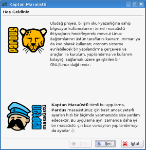
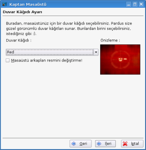

Kaptan Masaüstü
Kaptan Masaüstü
Kaptan Masaüstü, Pardus masaüstü ilk açıldığında kullanıcıyı karşılayan bir yardımcı programdır. Kaptan Masaüstü, Pardus hakkında genel bilgiler verirken kullanıcının masaüstünü daha rahat kullanabilmesi için temel yapılandırma seçeneklerini de düzenler.
Ekran Görüntüleri
|  |  |
Kodlar
Bu web sitesinde bulunan bilgi ve belgelerin, kaynak gösterilmek koşulu ile kullanılması serbesttir.
Pardus markası ve logotipi TÜBİTAK'ın tescilli markasıdır. Kullanım koşulları için Yasal Uyarı bölümünü inceleyiniz.
Bilgi ve önerileriniz için bilgi at pardus.org.tr
TÜBİTAK - UEKAE, PK.74 41470, Gebze / Kocaeli.